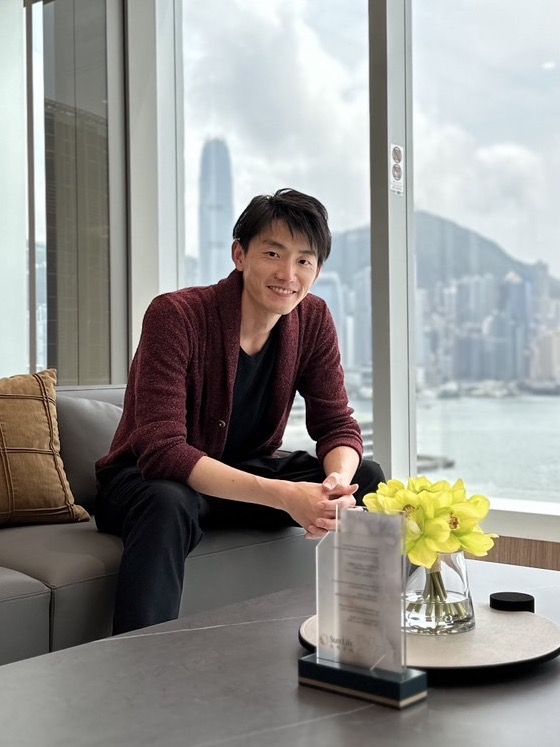

1. 悪意のない人から、やってくる
私を詐欺案件へ繋いだのは、悪気のない友人たちでした。「お前の夢はすごいな、いい人を紹介するよ」——本人も知らないまま、善意で繋いでいる。だからいちばん警戒しにくく、いちばん断りにくいのです。
失敗も遠回りも、すべてが今の使命につながっています。知上会代表・堀之内の歩みをご紹介します。

薬学部を卒業し、薬剤師として歩み始めた一人の青年。学びの好奇心から学部の外へ飛び出し、全国の仲間と出会う日々。しかしその先で、人生を揺るがす経験をします。
「なぜ、お金の学びは世の中にないのだろう」。その問いが、知上会のすべての出発点になりました。
薬学部に在籍しながら、他学部・他大学の学生や社会人と交流するイベントを企画。愛知の一大学から始まった活動は、やがて全国規模に広がり、各地を飛び回る日々となりました。
薬剤師として生きると決めた矢先、思い描いた暮らしにはお金が足りないと気づきます。追加で働くのではなく「お金でお金を増やす」道を探し、投資を学び始めました。
夢を語り合う中で「いい人を紹介するよ」と繋がれた先には、数々の詐欺案件が待っていました。悪気のない善意の紹介ゆえに、当時流行った手口にほぼすべて引っかかってしまう——痛烈な経験でした。
なぜ、これほど大切なお金の学びが世の中にないのか。悔しさは、学びへの決意に変わります。そんな折、語学留学でアメリカへ渡る機会が訪れました。
カリフォルニアやニューヨークで、高校生が金融を学ぶカリキュラムを目の当たりに。大学の講義にも飛び込み、教育レベルの違いに衝撃を受けます。「日本にも、この学びを」——確信が生まれた瞬間でした。
同じ志を持つ実践者と出会い「これだ」と直感。薬剤師と兼業する個人事業主として活動を開始します。日本にいながら将来に備える方法を学び、「気が楽になった」その体験を、多くの人に届けたいと願うようになりました。
基礎知識から長期の資産形成を乗りこなすまで、一人ひとりに伴走。お金にとどまらず、生き方全体に寄り添うコンサルや、日々の発信を続けています。
語学留学で渡ったアメリカで、高校生向けの金融カリキュラムを目の当たりにしました。大学の講義にも飛び込み、教育レベルの違いに衝撃を受けます。
「日本にも、この学びを」——知上会の輪郭が、はっきりと見えた瞬間でした。
当時流行していた手口には、ほとんど引っかかりました。だからこそ今、はっきり言える共通点が3つあります。
私を詐欺案件へ繋いだのは、悪気のない友人たちでした。「お前の夢はすごいな、いい人を紹介するよ」——本人も知らないまま、善意で繋いでいる。だからいちばん警戒しにくく、いちばん断りにくいのです。
将来を熱く語り合う場は、同時に狙われやすい場でもあります。前向きな気持ちほど、判断は甘くなる。夢と数字がセットで差し出されたら、一度立ち止まってください。
手口が巧妙だったのではありません。良し悪しを測る物差しを、私が持っていなかっただけでした。なぜこの分野の学びが世の中にないのか——その悔しさが、知上会の出発点です。
その人が詐欺に遭わず、たくさんの資産を持てる未来があれば、もう引っかかるようなマインドではなくなる。なんなら、その人が幸せに、豊かになってくれたら——それでいいんです。
— 知上会 代表 堀之内
正しい知識は、いちばんの防御。学びの力で、大切な資産と人生を守ります。
お金の不安が消えれば、生き方の選択肢は広がる。豊かさの先にある「自分らしさ」まで。
金融に限らず、教育全般へ。人の知恵が育つほど、世界はもっと良くなると信じて。